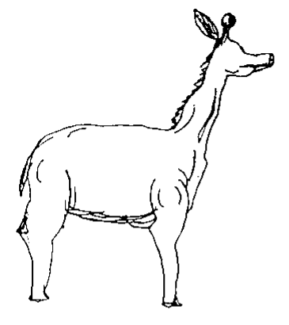
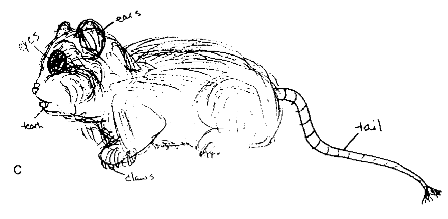
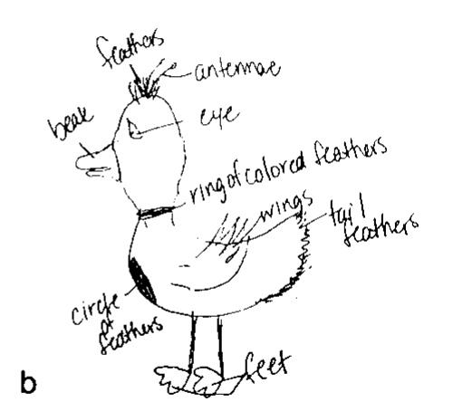
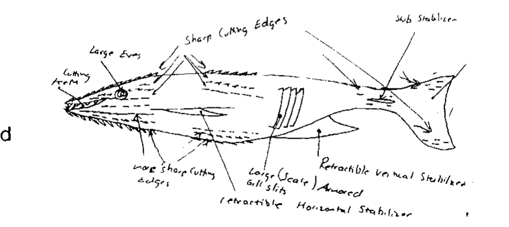

Earth Animals in Costume
Creativity is commonly defined as producing something both valuable and novel [1]. I find the latter harder to grasp: how do we come up with something truly new when everything we know comes from what we’ve already experienced or learned?
Margaret Boden describes conceptual spaces as ways of thinking shaped by familiar ideas and rules. She adds that creativity can involve exploring new possibilities within those spaces or changing the rules that define them [2]. But to change those rules, we first have to notice them.
When psychologist Thomas Ward asked people to imagine and draw animals from another planet, most of their creatures had bilateral symmetry, eyes, and legs [3]. They were Earth animals in costume.




What fascinates me most about this study is that the participants were actively trying to imagine something new, yet the animal seemed to have already begun to take shape before they started drawing.
It makes me wonder how often my assumptions shape my choices without me noticing. What possibilities have I ruled out before I’ve even begun?
References
- [1]Runco, M. A., & Jaeger, G. J. (2012). The standard definition of creativity. Creativity Research Journal.
- [2]Boden, M. A. (2004). The Creative Mind: Myths and Mechanisms (2nd ed.). Routledge.
- [3]Ward, T. B. (1994). Structured imagination: The role of category structure in exemplar generation. Cognitive Psychology.